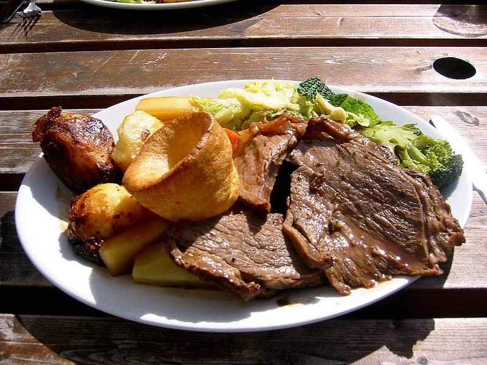

Dinner Dinner Dinner Dinner... BATMAN!
-

Quick, easy, sweet, spicy - the stir fry uses whatevers in the fridge
See a recipe → -

Cornish pasty with a few chips or a salad - sound the dinner gong
See a recipe → -

Keep on roasting - make everyday a Sunday
See a recipe →